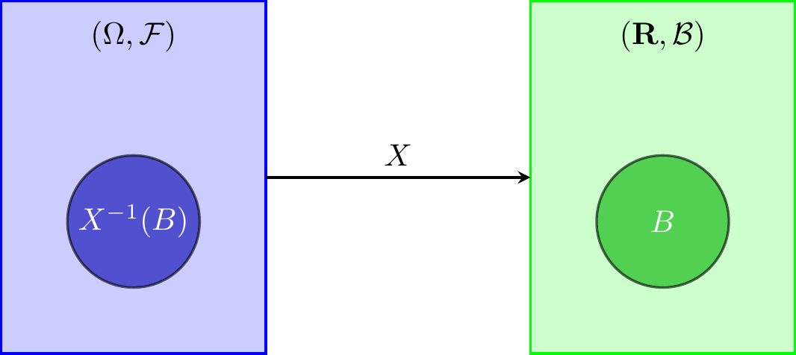
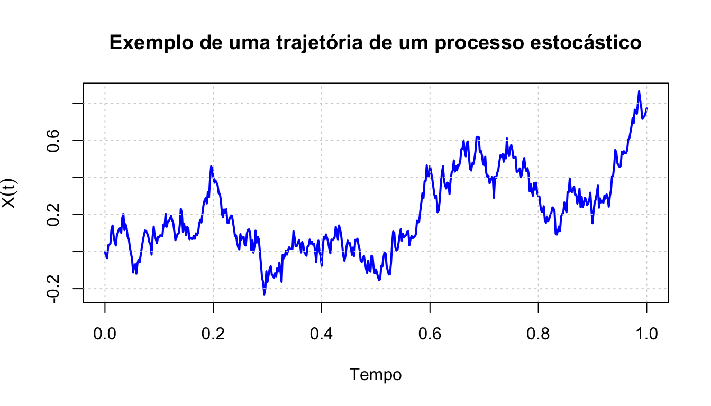

1 Introdução aos processos estocásticos
1.1 Conceitos fundamentais
Nesta secção procede-se a uma revisão sumária de noções basilares de probabilidade e de variáveis aleatórias. Seguidamente, introduz-se o conceito de processo estocástico, entendido como uma família de variáveis aleatórias definidas sobre um espaço de probabilidade e indexadas por um conjunto de parâmetros, usualmente interpretados como o tempo. Finalmente, analisam-se algumas classes fundamentais de processos estocásticos, em particular os processos com incrementos independentes e estacionários, bem como os processos estacionários em sentido forte e em sentido fraco.
Designa-se, como habitualmente, por espaço amostral o conjunto de todos os resultados possíveis de uma experiência aleatória, representado por \(\Omega\). No que se segue, consideramos que \(\Omega\) é um conjunto não vazio.
\(\,\)
Definição 1.1 (Sigma-álgebra) Uma \(\sigma\)-álgebra é uma família \(\mathcal{F}\) de subconjuntos de \(\Omega\) que satisfaz as seguintes propriedades:
\(\emptyset \in \mathcal{F}\) e \(\Omega \in \mathcal{F}\);
Se \(A \in \mathcal{F}\), então \(A^c \in \mathcal{F}\), onde \(A^c\) denota o complementar de \(A\) relativamente a \(\Omega\);
Se \(A_n \subseteq \mathcal{F}, ~n \in \mathbb{N}\), então \(\displaystyle \bigcup_{n \in \mathbb{N}} A_n \in \mathcal{F}\).
Os elementos de \(\mathcal{F}\) designam-se por conjuntos mensuráveis (ou \(\mathcal{F}\)-mensuráveis, para explicitar a \(\sigma\)-álgebra a que pertencem).
\(\,\)
Definição 1.2 (Medida de probabilidade) Uma medida de probabilidade \(P\) na \(\sigma\)-álgebra \(\mathcal{F}\) é uma função \(P: \mathcal{F} \rightarrow [0,1]\) que satisfaz as seguintes propriedades:
\(P(\emptyset) = 0\);
\(P(\Omega) = 1\);
Se \((A_n)_{n \in \mathbb{N}}\) é uma família de conjuntos dois a dois disjuntos em \(\mathcal{F}\), então \[P\left(\bigcup_{n \in \mathbb{N}}{A_n}\right)=\sum_{n \in \mathbb{N}}{P(A_n)}.\]
\(\,\)
Definição 1.3 (Espaço de probabilidade) Um espaço de probabilidade é um terno \((\Omega,\mathcal{F},P),\) onde \(\Omega\) é um conjunto, \(\mathcal{F}\) é uma \(\sigma\)-álgebra em \(\Omega\) e \(P\) é uma medida de probabilidade em \(\mathcal{F}\).
Os elementos de \(\mathcal{F}\) chamam-se acontecimentos; \(P(A), ~A \in \mathcal{F}\), representa a probabilidade do acontecimento \(A\).
\(\,\)
Definição 1.4 (Sigma-álgebra de Borel) Uma \(\sigma-\)álgebra de Borel, \(\mathcal{B}\), definida num conjunto \(E\) satisfaz as seguintes propriedades:
\(\emptyset \in \mathcal{B}\) e \(E \in \mathcal{B}\);
\(\mathcal{B}\) é fechada relativamente ao complementar, isto é, \(\forall ~ A \in \mathcal{B}: A^c \in \mathcal{B}\);
\(\mathcal{B}\) é fechada relativamente à reunião numerável, isto é, se \(A_i \in \mathcal{B}\) para todo \(i \in \mathbb{N}\), então \(\bigcup\limits_{i=1}^{n} A_i \in \mathcal{B}\).
Uma \(\sigma-\)álgebra de Borel é um caso particular de uma \(\sigma-\)álgebra e aplica-se aos conjuntos abertos de \(E\). A \(\sigma-\)álgebra de Borel mais comum é a \(\sigma-\)álgebra de Borel em \(\mathbb{R}\), que se denota por \(\mathcal{B}_{\mathbb{R}}\), ou simplesmente \(\mathcal{B}\) caso não existam ambiguidades.
\(\,\)
Definição 1.5 (Variável aleatória) Seja \((\Omega,\mathcal{F},P)\) um espaço de probabilidade. Diz-se que uma função \(X:\Omega \rightarrow \mathbb{R}\) é uma variável aleatória (v.a.) se \[ \forall ~ B \in \mathcal{B}: X^{-1}(B) \in \mathcal{F}, \] onde \(\mathcal{B}\) denota a \(\sigma\)-álgebra de Borel em \(\mathbb{R}\).
Adicionalmente, diz-que \(X\) é \(\mathcal{F}-\)mensurável, ou simplesmente mensurável quando a \(\sigma\)-álgebra associada estiver subentendida.
Em termos gráficos,

\(\,\)
Teorema 1.1 Seja \(X:\Omega \to \mathbb{R}\) uma variável aleatória. Defina-se \[ \sigma(X) = \{ X^{-1}(B) : B \in \mathcal{B} \}. \] Então, \(\sigma(X)\) é a menor \(\sigma\)-álgebra sobre \(\Omega\) para a qual \(X\) é mensurável. Esta σ-álgebra, que está contida em \(\mathcal{F}\), designa-se por σ-álgebra gerada por \(X\).
\(\,\)
Definição 1.6 (Média e variância) Sejam \((\Omega,\mathcal{F},P)\) um espaço de probabilidade e \(X:\Omega \rightarrow \mathbb{R}\) uma variável aleatória. Define-se o valor esperado (ou média) e a variância de \(X\) da seguinte forma:
1. Caso geral (medida de probabilidade \(P\)): \[ E(X) = \int_\Omega X \, dP, \quad \operatorname{Var}(X) = \int_\Omega (X - E(X))^2 \, dP, \] desde que estes integrais existam e sejam finitos.
2. Caso discreto:
Se \(X\) assume valores em um conjunto discreto \(\{x_1, x_2, \dots\}\) com probabilidades \(p_i = P(X=x_i)\), então
\[
E(X) = \sum_i x_i \, p_i, \quad
\operatorname{Var}(X) = \sum_i (x_i - E(X))^2 \, p_i.
\]
3. Caso contínuo:
Se \(X\) possui densidade \(f_X(x)\) relativamente à medida de Lebesgue, então
\[
E(X) = \int_{-\infty}^{+\infty} x f_X(x) \, dx, \quad
\operatorname{Var}(X) = \int_{-\infty}^{+\infty} (x - E(X))^2 f_X(x) \, dx.
\]
\(\,\)
Definição 1.7 Sejam \((\Omega,\mathcal{F},P)\) um espaço de probabilidade e \(X\) uma variável aleatória definida nesse espaço.
Diz-se que \(X\) é uma variável aleatória de quadrado integrável quando \[E(X^2)<+\infty;\]
O espaço \(L^2\) é o conjunto das variáveis aleatórias de quadrado integrável definidas em \((\Omega,\mathcal{F},P)\);
A norma \(L^2\) é a norma definida por \[\forall ~ X \in L^2:~ ||X||_{L^2} = \left(E(X^2)\right)^{1/2}.\]
\(\,\)
Nota. Relativamente à definiçao de espaço \(L^2\), na realidade deveríamos dizer: “espaço constituído pelas classes de equivalência de variáveis aleatórias…”, isto é, para duas variáveis aletórias \(X\) e \(Y\) definidas em \((\Omega,\mathcal{F},P)\), considere-se a relação de equivalência \[X \sim Y \iff P(X \neq Y)=0\] e constrói-se o espaço \(L^2\) a partir da classe de equivalência \([X]=\{Y: X \sim Y\}\).
\(\,\)
Definição 1.8 Seja \((X_n: n \in \mathbb{N})\) uma sucessão de variáveis aleatórias em \(L^2\). Diz-se que \((X_n: n \in \mathbb{N})\) converge para \(X\) em \(L^2\) se \[||X_n-X||_{L^2}\rightarrow 0 \quad \text{ quando } \quad n \to +\infty,\] ou, de modo equivalente, \[E((X_n-X)^2) \to 0 \quad \text{ quando } \quad n \to +\infty.\] A este tipo de convergência chama-se convergência em média quadrática e representa-se por \[X_n \xrightarrow{m.q.}X \quad \text{ quando } \quad n \to +\infty\] ou \[\mathop{l.i.m.}\limits_{n \to +\infty}X_n=X.\]
\(\,\)
Definição 1.9 Sejam \(X\) uma variável aleatória e \((X_n : n \in \mathbb{N})\) uma sucessão de variáveis aleatórias definidas no espaço de probabilidade \((\Omega, \mathcal{F}, P)\).
Diz-se que \(X_n\) converge quase certamente (q.c.), ou que converge com probabilidade 1 para \(X\), e denota-se por
\[ X_n \xrightarrow{q.c.} X \quad \text{ou} \quad \lim_{n \to +\infty} X_n = X \quad q.c., \]
se \(X_n(\omega) \to X(\omega)\) para todo \(\omega \in \Omega \setminus N\), onde \(N \in \mathcal{F}\) é um conjunto de medida nula, isto é, \(P(N) = 0\).Diz-se que \(X_n\) converge em probabilidade (ou converge estocasticamente) para \(X\), e denota-se por
\[ X_n \xrightarrow{P} X \quad \text{ou} \quad P-\lim_{n \to +\infty} X_n = X, \]
se, para todo \(\delta > 0\),
\[ P(|X_n - X| > \delta) \to 0 \quad \text{quando} \quad n \to +\infty. \]
\(\,\)
Quando se pretende estudar fenómenos que não têm qualquer evolução, usam-se amostras aleatórias (repetições de observações i.i.d.’s). Mas, e se estivermos perante variáveis aleatórias que já se observaram (ou podiam observar) no passado e que poderemos observar no futuro? Tal ocorre quando pretendemos estudar, por exemplo:
cotação diária de uma ação na bolsa de valores;
evolução da taxa de desemprego num dado período;
número de pessoas que chegam a uma certa fila para serem atendidas;
evolução da temperatura num local;
\(\ldots\)
Nos casos acima descritos dispomos apenas de uma única observação (chamada trajetória) a partir da qual se pretende extrair conclusões. Nesta trajetória não existe independência entre observações. Tipicamente pretendemos fazer:
previsão de observações futuras;
identificação do tipo de evolução;
filtragem (previsão com a ajuda de observações parciais).
\(\,\)
Definição 1.10 (Processo estocástico) Um processo estocástico (PE) é uma família de v.a \(\{X_t, ~t \in T\}\), definida sobre o mesmo espaço de probabilidade \((\Omega, \mathcal{F}, P)\) e assumindo valores num mesmo espaço mensurável \((E,\mathcal{B})\), onde:
\(T:\) espaço dos parâmetros (ou do tempo);
\(\Omega:\) espaço de resultados possíveis;
\(\mathcal{F}:\) \(\sigma-\)álgebra definida em \(\Omega\);
\(P:\) medida de probabilidade;
\(E:\) conjunto de espaço de estados (a definir posteriormente);
\(\mathcal{B}:\) \(\sigma-\)álgebra de Borel definida em \(E\).
\(\,\)
Nota.
Dado um espaço de probabilidade \((\Omega, \mathcal{F}, P)\) e um conjunto arbitrário \(T\), um PE é uma função \(X(t,\omega)\) definida em \(T \times \Omega\), tal que, para cada \(t \in T\), \(X_t(\omega)\) é uma v.a..
O conceito de PE generaliza o de v.a. fazendo-a depender de um parâmetros \(t\) com domínio em \(T\). Assim, podemos interpretar um PE como uma família ordenada de v.a.’s.
Para cada \(\omega_0\) fixo, \(\omega_0 \in \Omega\), \(X(\omega_0,t)\) é uma função não aleatória de \(t\). Deste modo, um PE pode identificar-se com um sistema que a cada ponto \(\omega \in \Omega\), faz corresponder uma função de parâmetro \(t\). Cada uma dessas funções diz-se uma trajetória ou realização do processo \(X\).
\(\,\)
Definição 1.11 (Trajetória de um processo estocástico) Chama-se trajetória ou realização de um processo estocástico \(X\) à coleção \(\{X_t(\omega), t \in T\}\), \(\forall ~ \omega \in \Omega\).
\(\,\)
Nota. Em geral \((E,\mathcal{B})=(\mathbb{R}^n, \mathcal{B}_{\mathbb{R}^n})\), onde:
\(\mathbb{R}^n:\) conjunto dos possíveis valores do processo \(X_t\);
\(\mathcal{B}_{\mathbb{R}^n}:\) \(\sigma-\)álgebra dos borelianos de \(\mathbb{R}^n\);
Se \(n=1\) o PE chama-se processo estocástico univariado;
Se \(n>1\) o PE chama-se processo estocástico multivariado;
\(t:\) instante onde é feita a observação ou o período relativo a essa observação;
Se \(E\) for finito ou infinito numerável então \(X\) é um PE de espaço de estados discreto;
Se \(E=\mathbb{R}\) então \(X\) é um PE de valores reais;
Se \(T\) for finito ou infinito numerável então \(X\) é um PE de tempo discreto (tipicamente \(T=\mathbb{N}_0\) ou \(T=\mathbb{Z}\));
Se \(T\) for infinito não numerável então \(X\) é um PE de tempo contínuo (tipicamente \(T=\mathbb{R}^+_0\) ou \(T=\mathbb{R}\)).
\(\,\)
Segue-se um exemplo de uma trajetória de um PE:

\(\,\)
Exercício 1.1 Para cada um dos seguintes processos estocásticos indique o espaço parâmetro e o espaço de estados:
Sejam \(X_i\) a quantidade de cerveja (em litros) pedida pelo \(i-\)ésimo cliente que entrou num bar e \(N(t)\) o número de clientes que chegaram ao bar até ao instante \(t\). O processo estocástico é \[Z_t=\sum\limits_{i=1}^{N(t)}X_i, ~t \geq 0,\] onde \(Z_t\) representa a quantidade de cerveja pedida até ao instante \(t\).
Trinta e seis pontos são escolhidos aleatoriamente no Alaska de acordo com alguma distribuição de probabilidade. Centrado em cada um desses pontos é desenhado um círculo de raio aleatório originando assim uma região \(\Delta\) do Alaska. Seja \(X(A)\) o preço do petróleo extraído no solo da região \(A \cap \Delta\). O processo é \[(X(B): ~B \subset Alaska).\]
Um bebé dorme numa de três posições: (i) de barriga para cima com feição radiante; (ii) enrolada na posição fetal; (iii) na posição fetal, chupando o dedo polegar. Seja \(X_t\) a posição de dormir do bebé no instante \(t\). O processo é \((X_t: ~t\geq 0)\).
Seja \(X_n\) o estado (ligado ou desligado) de uma fotocopiadora de um escritório ao meio-dia do \(n-\)ésimo dia. O processo é \((X_n: ~ n =1, 2, \dots)\).
\(\,\)
Exercício 1.2
Seja \(\Omega = \{\omega_1, \omega_2, \omega_3, \omega_4\}\) com \(P(\omega_i) = 1/4\), para \(i = 1, 2, 3, 4\). Considere-se o processo estocástico \(\{X(t, \omega): ~ t \geq 0\}\) tal que \[ X(t, \omega_i) = t \times i, \quad i = 1, 2, 3, 4. \]
Classifique o processo em causa;
Determine a função distribuição de \(X\) para \(t = 1\);
Indique as trajectórias do processo;
Determine a função distribuição conjunta de \(\left(X(1), X(2), X(3)\right)\).
\(\,\)
Exercício 1.3
Considere uma sucessão infinita de provas de Bernoulli. Seja \(X_{t}\) o número de provas até obter um sucesso pela \(t\)-ésima vez, \(t = 1, 2, \ldots\)
Defina o exposto como um processo estocástico, indicando o espaço dos parâmetros e dos estados.
Determine, para cada \(t\), a função de probabilidade de \(X_{t}\).
Represente graficamente uma trajectória do processo.
Determine a distribuição conjunta de \((X_{2}, X_{3}, X_{4})\).
Calcule \(P(X_{4} = x \mid X_{3} = x_{3}, X_{2} = x_{2})\) e \(P(X_{4} = x \mid X_{3} = x_{3})\). Comente o resultado.
Determine a distribuição da v.a. “tempo ou número de provas entre dois sucessos de Bernoulli”.
Determine a distribuição da v.a. “número de provas necessárias até à ocorrência de dois sucessos consecutivos de Bernoulli”.
1.2 Tipos clássicos de processos estocásticos
1.2.1 Processos de incrementos independentes e estacionários
Definição 1.12 (Processo com incrementos inpedendentes) \(\{X_t, ~ t \in T\}\) é um PE com incrementos independentes sse \[\forall ~n \in \mathbb{N}, \forall ~t_1, \ldots,t_n \in T: ~t_1 <t_2<\ldots<t_n \implies X_{t_2}-X_{t_1}, X_{t_3}-X_{t_2},\ldots,X_{t_n}-X_{t_{n-1}}\] são v.a.’s mutuamente independentes.
\(\,\)
Definição 1.13 (Processo com incrementos estacionários) \(\{X_t, ~ t \in T\}\) tem incrementos estacionários sse \(\forall ~s, t \in T, ~s<t,\) a distribuição de \(X_t-X_s\) depende apenas da amplitude \(t-s\).
\(\,\)
Nota. Num PE com incrementos estacionários, a distribuição de \(X_{t_{1+h}}-X_{t_1}\) é a mesma de \(X_{t_{2+h}}-X_{t_2}\), \(\forall ~ t_1,t_2 \in T\) e \(\forall ~ h \in \mathbb{R}_0^+\) tais que \(t_1+h, ~t_2+h \in T.\)
\(\,\)
Do ponto de vista da modelação, a propriedade de independência de incrementos pode ser postulada para o modelo quando os resultados obtidos em intervalo de tempo disjuntos forem independentes. Adicionalmente, a propriedade de estacionariedade de incrementos pode ser postulada para o modelo quando for plausível que a distribuição de resultados em qualquer intervalo de tempo depende apenas da amplitude desse intervalo.
\(\,\)
Definição 1.14 (Processo de incrementos independentes e estacionários) Dado um PE \(X:=\{X_t, ~ t \in T\}\), onde \(T\) está munido de uma relação de ordem, \(X\) é um PE de incrementos independentes e estacionários sse tiver incrementos independentes e incrementos estacionários.
1.2.2 Processo estocástico real de 2ª ordem
Definição 1.15 (Processo Gaussiano) Diz-se que \(\{X_t, ~t \in T\}\) é um Processo Gaussiano se \[ \forall ~n \in \mathbb{N},~ \forall ~t_1, \ldots, t_n \in T, \quad (X_{t_1}, X_{t_2}, \ldots, X_{t_n}) \sim \mathcal{N}_n(\mu, \Sigma), \] isto é, qualquer vetor finito de variáveis aleatórias do processo tem distribuição normal multivariada.
\(\,\)
Definição 1.16 (Processo estocástico real de 2ª ordem) Diz-se que \(\{X_t, ~ t \in T\}\) é um processo estocástico real de 2ª ordem se, e só se,
\[
\forall ~t \in T: \; E\!\left(X_t^2\right) < +\infty.
\]
Nestes casos, a descrição do processo faz-se habitualmente em termos dos seus dois primeiros momentos:
- função média: \(m(t) = E(X_t), \quad \forall~t \in T\);
- função de covariância: \(\Gamma(s,t) = \mathrm{Cov}(X_s, X_t), \quad \forall~s,t \in T\).
Em geral, a informação fornecida por \(m(t)\) e \(\Gamma(s,t)\) não determina completamente a distribuição do processo. Contudo, no caso particular de um processo Gaussiano, a especificação destes dois primeiros momentos é suficiente para caracterizar completamente o processo.
\(\,\)
Exemplo 1.1 (Ruído Branco Gaussiano) Chama-se Ruído Branco Gaussiano a um PE \(\{\varepsilon_t, ~t \in T\}\) que satisfaz:
\(\forall ~t \in T, ~E(\varepsilon_t)=0\);
\(\forall ~t \in T, ~Var(\varepsilon_t)=\sigma^2\);
\(\forall ~s, t \in T, s \neq t, ~Cov(\varepsilon_s,\varepsilon_t)=0\);
\(\forall ~n \in \mathbb{N}, \forall ~t_1, t_2, \ldots, t_n \in T: (\varepsilon_{t_1}, \varepsilon_{t_2}, \ldots, \varepsilon_{t_n})\) é um vetor aleatório Gaussiano.
1.2.3 Processos estacionários
Definição 1.17 (Processo estacionário em sentido forte) Diz-se que um PE \(\{X_t,~ t \in T\}\) é estacionário em sentido forte (ou fortemente estacionário) se: \[\forall~n \in \mathbb{N},~ \forall~t_1, \ldots, t_n \in T,~ \forall~h \in \mathbb{R} \text{ tal que } t_1 + h, \ldots, t_n + h \in T,\] \[(X_{t_1}, \ldots, X_{t_n}) \buildrel d \over = (X_{t_1+h}, \ldots, X_{t_n+h}),\] ou seja, a distribuição conjunta de qualquer vetor finito de variáveis do processo é invariante por translação do tempo.
Como consequência da estacionariedade forte, temos o seguinte Teorema:
Teorema 1.2 Se \(\{X_t, t \in T\}\) é um PE de 2ª ordem e se é fortemente estacionário, então:
\(E(X_t)=m\), isto é, a média do processo é independente de \(t\);
\(\forall ~h \in T, ~ \Gamma(t,t+h)=Cov(X_t,X_{t+h})=Cov(X_0,X_h)=\gamma(h)\), independente de \(t\).
\(\,\)
Definição 1.18 (Processo estacionário em sentido fraco) Um PE \(\{X_t, t \in T\}\) é estacionário em sentido fraco (ou estacionário de 2ª ordem), sse:
\(\forall ~t \in T, ~E(X^2_t)< + \infty\);
\(\forall ~t \in T, ~E(X_t)=m\), independente de \(t\);
\(\forall ~t \in T, \forall ~h \in T, ~Cov(X_t,X_{t+h})=\gamma(h)\), isto é, a covariância apenas depende de \(h\).
\(\,\)
Nota. A função \(\gamma(h), ~\forall ~ h \in T\), chama-se função de autocovariância. Se \(h=0\), então \(Cov(X_t,X_{t+h})=Var(X_t)=\gamma(0), ~\forall ~t \in T.\) A esta propriedade chama-se propriedade da homocedasticidade.
\(\,\)
Vejamos agora que o Ruído Branco, \(\{\varepsilon_t, ~t \in T\}\), é um exemplo de um PE estacionário de 2ª ordem:
Exemplo 1.2
\(E(\varepsilon_t)=0\);
\(Var(\varepsilon_t)=\sigma^2 \implies E(\varepsilon^2_t) < + \infty\);
\(t \neq s, ~Cov(\varepsilon_s,\varepsilon_t)=0, \implies\) independência de \(t\) e de \(s\).
Assim,
\[ \gamma(h)= \begin{cases} \sigma^2, \quad h=0,\\ 0, \quad h \neq 0. \end{cases} \] Logo, estão satisfeitas as condições de estacionariedade fraca.
\(\,\)
Nota (Observação importante). \[\text{Estacionariedade forte} + E(X_t^2) <+\infty \Rightarrow \text{Estacionariedade fraca}.\] \[\text{Estacionariedade fraca} \nRightarrow \text{Estacionariedade forte}.\]
\(\,\)
Exemplo 1.3 Considere o PE \((X_t, ~t \in \mathbb{N})\) onde \(X_t\) tem distribuição de Cauchy, isto é, com f.d.p. \(f(x)=\dfrac{1}{\pi(1+x^2)}\). Uma vez que não existe \(E(X_t)\), então \(E(X_t^2)\) não está definido. Assim, o processo é fortemente estacionário mas não é fracamente estacionário.
\(\,\)
Propriedade 1.1 (Propriedades da função de autocovariância em processos estacionários) A função de autocovariância \(\gamma(h)\) goza das seguintes propriedades:
\(\gamma(h)=\gamma(-h), ~ \forall ~h \in \mathbb{Z}\), isto é, a função de autocovariância é par;
\(\forall ~n \in \mathbb{N}, \forall ~a_j \in \mathbb{R}, \forall ~t_j \in \mathbb{Z}, ~j=1, \ldots,n:\) \[\forall~n \in \mathbb{N},~ \forall~a_1, \ldots, a_n \in \mathbb{R},~ \forall~t_1, \ldots, t_n \in \mathbb{Z}, \quad \sum_{j=1}^{n} \sum_{k=1}^{n} a_j a_k\, \gamma(t_j - t_k) \geq 0,\] isto é, a função de autocovariância define uma forma quadrática não-negativa.
\(\,\)
Definição 1.19 (Função de autocorrelação em processos estacionários) Seja \(\{X_t, ~ t \in T\}\) um PE estacionário. Chama-se função de autocorrelação à função \(\rho\) definida por: \[\rho(h)=Corr(X_t,X_{t+h})=\dfrac{Cov(X_t,X_{t+h})}{\sqrt{V(X_t)}\sqrt{V(X_{t+h})}}=\dfrac{\gamma(h)}{\gamma(0)}.\]
\(\,\)
Propriedade 1.2 (Propriedades da função de autocorrelação em processos estacionários) A função de autocorrelação \(\rho(h)\) goza das seguintes propriedades:
\(\rho(h)=\rho(-h), \forall ~h \in \mathbb{Z}\), isto é, a função de autocorrelação é par;
\(\forall ~n \in \mathbb{N}, \forall ~a_j \in \mathbb{R}, \forall ~t_j \in \mathbb{Z}, ~j=1, \ldots,n:\) \[\sum\limits_{j=1}^{n}\sum\limits_{k=1}^{n} a_ja_k\rho(t_j-t_k) \geq 0,\] isto é, trata-se de uma função semi-definida positiva.
\(\,\)
Exercício 1.4
Sejam \(X\) e \(Y\) duas variáveis aleatórias com média nula, não correlacionadas e com a mesma variância \(\sigma^2>0\). Considere-se o PE \((Z_t: ~t \in \mathbb{Z})\) definido por:
\[Z_t=f(t) \cdot X + g(t) \cdot Y, \quad t \in \mathbb{Z},\] onde \(f\) e \(g\) são função determinísticas.
Encontre expressões para \(f\) e \(g\) de modo a garantir que o processo \((Z_t: ~t \in \mathbb{Z})\) admita variância constante mas não seja necessariamente estacionário em sentido fraco.
Concretize \(f\) e \(g\) de modo a que \((Z_t: ~t \in \mathbb{Z})\) seja fracamente estacionário.
\(\,\)
Exercício 1.5 Seja \(\varepsilon = (\varepsilon_t: ~t \in \mathbb{Z})\) um ruído branco de variância \(\sigma^2 > 0\). Considere os processos estocásticos \(X = (X_t: ~ t \in \mathbb{Z})\) e \(Y = (Y_t: ~ t \in \mathbb{Z})\) definidos do seguinte modo: \[X_t = \varepsilon_t \quad \text{e} \quad Y_t = (-1)^t \varepsilon_t, \quad \forall ~ t \in \mathbb{Z}.\]
Prove que \(X\) e \(Y\) são fracamente estacionários.
Mostre que o processo \((Z_t = X_t + Y_t: ~ t \in \mathbb{Z})\) é um processo não estacionário.
\(\,\)
Exercício 1.6 Considere um processo estocástico \(Y = (Y_t: t \in \mathbb{Z})\) tal que \(Y_t = \varepsilon_t - \theta \varepsilon_{t-1}\), \(\theta \in [-1,1]\), onde \((\varepsilon_t: t \in \mathbb{Z})\) é um ruído branco gaussiano de variância \(\sigma^2 > 0\).
Mostre que \(Y\) é gaussiano.
Determine a distribuição da variável aleatória \(Y_t, ~\forall ~t \in \mathbb{Z}\).
Determine a função de autocorrelação de \(Y\).
O que pode concluir quanto à estacionariedade forte e fraca de \(Y\)?
\(\,\)
Exercício 1.7 Seja \(X = (X_t: ~ t \geq 0)\) um processo estocástico, definido sobre o espaço de probabilidade \((\Omega, \mathcal{F}, P)\), tal que, para todo \(t \geq 0\), \(X_t \sim \mathcal{N}(0, t)\), e \(P(X_0 = 0) = 1\).
Diga em que condições será \(X\) um processo de incrementos independentes e estacionários.
Supondo que \(X\) é um processo de incrementos independentes e estacionários, mostre que: (i) \(\forall~ t, s \in [0,+\infty[\), com \(t > s\), tem-se que \(X_t - X_s \sim \mathcal{N}(0, |t - s|)\); (ii) \(X\) é um processo gaussiano centrado.
Considere o processo estocástico \(Y = (Y_t: t \geq 0)\) tal que: \[ Y(t)= \begin{cases} t, & X_t \geq 0\\ -t, & X_t < 0.\\ \end{cases} \] Mostre que \(Y\) é um processo estocástico de segunda ordem centrado. Será \(Y\) estacionário em algum sentido? Justifique.
\(\,\)
Exercício 1.8 Sejam \(X = (X_t: ~t \in \mathbb{Z})\) e \((\varepsilon_t: ~t \in \mathbb{Z})\) dois processos estocásticos definidos sobre o espaço de probabilidade \((\Omega, \mathcal{F}, P)\), tais que: \[ \forall ~t \in \mathbb{Z}, \quad X_t = \sum\limits_{j=0}^{+\infty} \left( \frac{4}{5} \right)^j \varepsilon_{t-j}. \]
Explique em que condições será \(\varepsilon\) um ruído branco.
Suponha que \(\varepsilon\) é um ruído branco tal que \(E[\varepsilon_t^2] = 9/50\). (i) Prove que \(X\) é fracamente estacionário e indique as respetivas função média e função de autocovariância; (ii) Suponha agora que \(X\) é um processo gaussiano. Indique a distibuição do vector aleatório \((X_t, X_s), ~ \forall ~ t, s \in \mathbb{Z}\).
Considere o processo estocástico \(Y = (Y_t: t \in \mathbb{Z})\) tal que: \[ Y_t = \begin{cases} 1/2, & X_t \geq 0 \\ -1, & X_t < 0, \end{cases} \] admitindo que \(X\) está nas condições da alínea b) ii). Calcule a função média de \(Y\) e mostre que \(Y\) é fracamente estacionário.
\(\,\)
Exercício 1.9 Seja \((\varepsilon_t: t \in \mathbb{Z})\) um ruído branco gaussiano de variância \(\sigma^2>0\). Considere um outro processo estocástico \((Y_t: ~t \in \mathbb{Z})\) definido por: \[Y_t=\varepsilon_t -\theta \varepsilon_{t-1}-\dfrac{\theta}{2}\varepsilon_{t-2}, \quad \theta \in [-1,1].\]
Defina processo gaussiano e mostre que \(Y\) é gaussiano.
Determine a função de autocorrelação do processo \(Y\).
1.2.4 Martingalas
Do ponto de vista da modelação, as martingalas são apropriadas para modelar fenómenos aleatórios, tais como jogos de azar.
Definição 1.20 (Martingala) Um PE \(\{X_t, ~ t \in T\}\) é uma Martingala sse:
\(E(\mid X_t \mid) < +\infty;\)
\(\forall ~n \in \mathbb{N}, ~\forall ~t_1< \ldots < t_{n+1} \in T: E(X_{t_{n+1}} \mid X_{t_1}, \ldots X_{t_n})=X_{t_n}\).
\(\,\)
Exemplo 1.4 Considere-se \(E\) discreto e \(T=\mathbb{N}\). Se interpretarmos \(X_n\) como a fortuna de um jogador após a realização do \(n-\)ésimo jogo, então a 2ª condição da definição anterior estabelece que a fortuna esperada após a \((n+1)-\)ésima partida do jogo é igual à fortuna depois do \(n-\)ésimo jogo, independentemente do que ocorreu anteriormente.
\(\,\)
Nota. Na definição de Martingala, podemos ainda considerar,
Submartingalas, quando \(\forall ~n \in \mathbb{N}, ~\forall ~t_1< \ldots < t_{n+1} \in T: E(X_{t_{n+1}} \mid X_{t_1}, \ldots X_{t_n}) \geq X_{t_n}\).
Supermartingalas, quando \(\forall ~n \in \mathbb{N}, ~\forall ~t_1< \ldots < t_{n+1} \in T: E(X_{t_{n+1}} \mid X_{t_1}, \ldots X_{t_n}) \leq X_{t_n}\).
\(\,\)
Exercício 1.10
Sejam \(X_0, X_1, \dots\) v.a.’s independentes com média finita e nula e \(S_n=\sum\limits_{i=0}^{n}X_i\). Mostre que o PE \(\{S_n: ~n \in \mathbb{N}_0\}\) é uma Martingala.
\(\,\)
Exercício 1.11
Considere um jogo no qual, em cada jogada, o jogador pode ganhar ou perder um euro, com igual probabilidade. Após \(n\) jogadas o ganho desse jogador é dado por \(S_n=\sum\limits_{i=i}^{n}X_i\), onde \(X_1, X_2, \dots\) são v.a.’s independentes. Mostre que o PE \(\{S_n: ~n \in \mathbb{N}\}\) é uma Martingala.
\(\,\)
Exercício 1.12
Sejam \(X_1, X_2, \dots\) são v.a.’s independentes com média unitária. Mostre que o PE \(\{Z_n: ~n \in \mathbb{N}\}\), definido por \[Z_n=\prod\limits_{i=1}^{n}X_i\] é uma Martingala.
\(\,\)
Exercício 1.13
Seja \((X_n, ~n=0,1,2,\dots)\) um PE com espaço de estados \(\mathbb{N}_0\), com média unitária para \(n \geq 1\), com incrementos independentes e tal que \(P(X_0=0)=1\).
O que significa dizer que o processo \(X\) tem incrementos independentes?
Prove que o processo \((X_n, ~n=0,1,2,\dots)\) é uma Martingala.
Sabendo que \(Var(X_n)=1\), o que pode afirmar quanto à estacionariedade fraca do processo \((X_n, ~n=0,1,2,\dots)\)?
1.2.5 Processos de Markov
Os processos de Markov são apropriados na modelação de fenómenos aleatórios cujo comportamento futuro não é alterado pelo conhecimento do seu passado, apenas interessa conhecer o estado presente, ou seja, a probabilidade de que o sistema físico esteja num determinado estado num dado instante \(t\) pode deduzir-se a partir do conhecimento desse estado num instante qualquer anterior e essa probabilidade não depende da “história” do sistema antes de \(t\).
\(\,\)
Definição 1.21 (Processo de Markov) Um PE \(\{X_t, t \in T\}\) com espaço de estados \(E\) diz-se um processo de Markov (ou Markoviano) sse \(\forall ~n \in \mathbb{N}, ~\forall ~t_1< \ldots < t_{n+1} \in T, ~\forall ~x_1, \ldots, x_{n+1} \in E, ~\forall ~B \in \mathcal{B}:\) \[P(X_{t_{n+1}} \in B \mid X_{t_1}=x_1, \ldots X_{t_n}=x_n)=P(X_{t_{n+1}} \in B \mid X_{t_n}=x_n).\]
\(\,\)
Teorema 1.3 Se \(E\) for discreto e \(T=\mathbb{N}\), a propriedade de Markov da definição anterior é equivalente à seguinte: \[\forall ~n \in \mathbb{N}, ~\forall ~x_0, \ldots, x_{n+1} \in E: P(X_0=x_0, \ldots, X_n=x_n)>0, \text{tem-se que }\] \[P(X_{n+1}=x_{n+1} \mid X_{0}=x_0, \ldots X_{n}=x_n)=P(X_{n+1}=x_{n+1} \mid X_{n}=x_n).\]
\(\,\)
Nota. Os processos de Markov, como quaisquer processos, são classificados de acordo com a natureza do espaço de estados \(E\) e do espaço dos parâmetros \(T\). Uma classe especial de processos de Markov são as Cadeias de Markov (C.M.): processos de Markov com espaço de estados \(E\) discreto.
Assim, uma cadeia de Markov pode interpretar-se com um PE cujo desenvolvimento se pode considerar como uma série de transições entre valores determinados que têm a propriedade de que a distribuição de probabilidade do estado futuro do processo, sabendo-se que ele está num dado estado, depende apenas deste estado e não do modo de como o processo lá chegou. As C.M. são classificadas em discretas ou contínuas. Nesta UC iremos abordar ambos os casos.